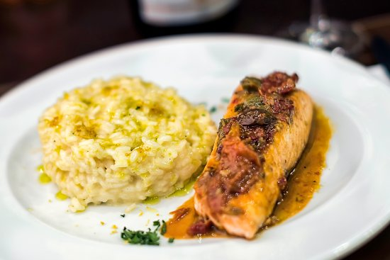

Mediterranean Salmon

Description
This Mediterranean-inspired salmon dish is full of fresh herby flavor thanks to a balsamic, basil, and cilantro marinade and basting sauce. Everyone I've made this for loves it!
Ingredients
- ½ cup olive oil
- ¼ cup balsamic vinegar
- 4 cloves garlic, pressed
- 4 (4 ounce) fillets salmon
- ½ teaspoons garlic salt
- 1 tablespoon chopped fresh cilantro
- 1 tablespoon chopped fresh basil
Steps
- Mix oil and vinegar together in a small bowl.
- Arrange salmon fillets in a shallow baking dish. Rub garlic over salmon, then pour oil and vinegar mixture over top, turning once to coat. Season with garlic salt, then scatter cilantro and basil over top. Let sit for 10 minutes
- Meanwhile, set an oven rack about 6 inches from the heat source and preheat the oven's broiler.
- Remove salmon from marinade and shake off excess. Discard all but a few tablespoons remaining marinade.
- Broil salmon in the preheated oven, turning once and brushing occasionally with reserved marinade up until the last 4 minutes, until fish is browned on both sides and flakes easily with a fork, 10 to 12 minutes.